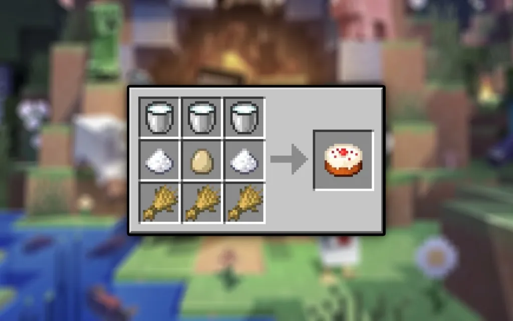

Eu na cozinha
Eu nao gosto exatamente de cozinhar, porem isso me relaxa porque vejo o prato pornto e isso me alegra
Receitas de Comida
Bolo de Caneca
Ingredientes:
- 1 ovo
- 3 colheres de sopa de leite
- 3 colheres de sopa de óleo
- 4 colheres de sopa de açúcar
- 2 colheres de sopa de achocolatado
- 4 colheres de sopa de farinha de trigo
- 1 colher de café de fermento em pó
Modo de Preparo:
- Em uma caneca grande, bata o ovo com um garfo.
- Adicione o óleo, o leite, o açúcar e o achocolatado, mexendo bem.
- Coloque a farinha de trigo e misture até a massa ficar homogênea.
- Por último, acrescente o fermento e misture suavemente.
- Leve ao micro-ondas por cerca de 3 minutos.
- Sirva com calda ou sorvete, se desejar.
Panqueca Americana
Ingredientes:
- 1 ovo
- 1 xícara de leite
- 1 xícara de farinha de trigo
- 1 colher de sopa de açúcar
- 1 colher de chá de fermento em pó
- 1 pitada de sal
- 1 colher de chá de manteiga derretida
Modo de Preparo:
- Misture o ovo, o leite e a manteiga em uma tigela.
- Acrescente a farinha de trigo, o açúcar, o fermento e o sal. Mexa até a massa ficar homogênea.
- Aqueça uma frigideira em fogo médio e unte com um pouco de manteiga ou óleo.
- Coloque uma concha da massa na frigideira e cozinhe até formar bolhas na superfície. Vire e cozinhe o outro lado.
- Sirva com mel, xarope de bordo ou frutas.
Receita de Bolo no Minecraft
O bolo no Minecraft é um item especial que pode ser usado para restaurar pontos de fome. Siga a receita abaixo para fazer o seu bolo no jogo!
Ingredientes
- 3 Baldes de Leite
- 3 Trigos
- 2 Açúcares
- 1 Ovo
Como Conseguir os Ingredientes
- Balde de Leite: Faça um balde usando 3 lingotes de ferro e clique com o botão direito em uma vaca para coletar o leite.
- Trigo: Cultive trigo ou encontre em vilas. Você pode plantar sementes de trigo para crescer mais.
- Açúcar: Derivado da cana-de-açúcar. Colha cana-de-açúcar e coloque-a na mesa de trabalho para transformá-la em açúcar.
- Ovo: Galinhas botam ovos periodicamente. Fique de olho nas galinhas para coletá-los.
Como Fazer o Bolo
Na mesa de trabalho, organize os ingredientes na grade 3x3 da seguinte maneira:

Lobbys
Voltar para o topo
Sobre mim
minecraft
Musicas
Roblox